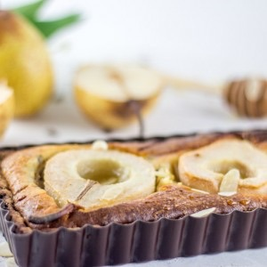

Tarte aux poires chocolat et crème d’amande façon frangipane

Aujourd’hui on se retrouve pour une nouvelle recette pour un goûter (ou dessert!) plein de gourmandises avec une tarte aux poires chocolat et sa crème d’amandes ou tarte Bourdaloue au chocolat pour ceux qui connaissent! Depuis que je me suis achetée ce moule à tarte rectangulaire je n’avais qu’une envie c’était de faire cette tarte à la poire qui me trottait dans la tête depuis quelque temps! Avec ce genre de dessert en même temps il y a peu de risques que ça ne fonctionne pas, car le mélange poire chocolat reste tout de même une valeur sûre! Cette année je n’ai pas fait de galette des rois (du moins pas encore!!) alors que l’année dernière c’était tout le contraire vu que j’en avais fait bien avant l’épiphanie!!! C’est un peu pour cette raison que j’ai décidé d’ajouter à ma tarte aux poires chocolat de la crème d’amande comme celle que l’on trouve dans les frangipanes et que j’ai mélangé ensuite à une crème pâtissière à la vanille. Il s’agit en réalité d’une tarte Bourdaloue avec des copeaux de chocolat 🙂
J’avais repéré sur Pinterest ce genre de visuel pour les tartes (j’ai d’ailleurs l’impression que c’est la grande mode de laisser les fruits entiers ou à moitié dans les préparations^^) j’avais donc à mon tour très envie d’essayer!
Visuellement c’est vraiment plaisant et ça change des tartes « classiques » où les fruits sont bien coupés et parfaitement bien alignés mais je dirais que ce n’est tout de même pas simple à manger. Tout le monde n’a pas autant de poires sur sa part et les fruits choisis on intérêt d’être bien mûres pour cuire parfaitement!!! Mis à part ces « petits détails » nous nous sommes régalés et je pense que je réitérerai ce type de présentation sans hésiter!
Je vous laisse maintenant découvrir la recette en espérant qu’elle vous plaira (comme à mon petit chat)!
Ingrédients
- Farine - 250g
- Beurre mou - 125g
- Sucre - 100g
- Oeuf - 1 jaune
- Eau - 1 càs
- Sel - 1 pincée
- Lait - 125ml
- Oeufs - 3 jaunes
- Sucre - 50g
- Farine - 10g
- Maizena - 20g
- Vanille - 1 gousse
- Sucre - 80g
- Amande en poudre - 135g
- Vanille - 1càc
- Beurre mou - 50g
- Oeufs - 2
- Chocolat - 70g
- Poire mûres - 2
Instructions
- Enfourner la pâte 10min à 210° dans le moule à tarte et réserver.
- Dans une casserole, faire chauffer le lait avec la gousse de vanille
- Porter à ébullition
- Pendant ce temps, dans un bol mélanger les jaunes d'œufs et le sucre
- Incorporer la farine et la maïzena et bien mélanger pour obtenir un mélange bien homogène
- Une fois le lait à ébullition, sortez le du feu
- Verser la moitié du lait dans le bol contenant les œufs, le sucre, la farine et la maïzena. Mélanger
- Reverser ce mélange dans le lait restant
- Remettre sur le feu, à feu doux et remuer jusqu’à obtenir une crème épaisse et onctueuse. Réserver
- Dans un grand bol, mélanger le sucre, la poudre d'amande, et le beurre mou
- Ajouter les œufs et l'extrait de vanille
- Mélanger pour obtenir un mélange homogène
- Couper le chocolat en petits morceaux à l'aide d'un couteau (vous pouvez acheter directement des pépites de chocolat)
- Incorporer le chocolat à la crème d'amande
- Couper les poires en deux et à l'aide d'une cuillère (j'ai utilisé des cuillère pour faire des billes) creuser la poire à l'endroit où se trouve les pépins.Réserver
- Préchauffer le four à 200°
- Réunir les deux crèmes et bien mélanger
- Les verser dans le plat à tarte
- Disposer vos poires dans le sens que vous voulez (attention selon la profondeur de votre moule et la grosseur de vos poires il est possible que vous ayez un couper un peu de l'arrière des poires)
- Arroser de miel
- Enfourner pendant 30min à 200°
Les tips de la communauté
Tarte très appréciée pour son association classique poires-chocolat. Les commentaires positifs soulignent la qualité de la présentation et le goût du fruit associé au chocolat. C'est une recette éprouvée qui plaît au plus grand nombre.
Astuces
- L'association poires-chocolat est un classique qui ne se démode pas
- Bien choisir des poires mûres pour meilleur goût
- Le chocolat de qualité rehausse le plat
Variantes suggérées
- est tellement belle ^^